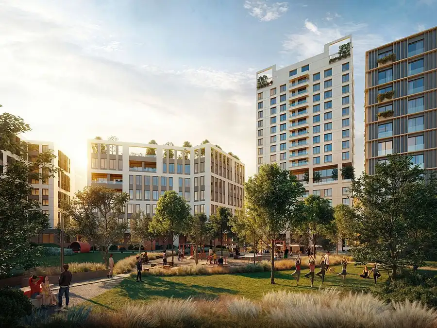
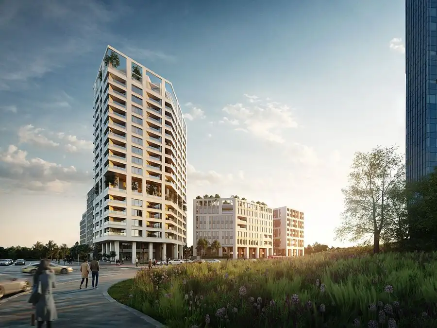

PARQ Zátišie – štýlový 3i byt v novostavbe s výhľadom do parku, 71 m2 + 5 m2 lodžia
Nové Mesto, Bratislava
- Dispozícia3-izbový
- Plocha70.8 m²
- Poschodie12. z 17
- StavNovostavba
- Energetická triedaA
O nehnuteľnosti
Nový projekt v bratislavskom Novom Meste pri jazere Kuchajda spája modernú architektúru, zelený vnútroblok a premyslené riešenia. Prepracovaný urbanizmus, funkčné dispozície a dôraz na rovnováhu sú základom bývania, ktoré má zmysel – dnes aj o desiatky rokov. Tento štýlový 3-izbový byt výmere 70,80 m2 plus 4,99 m2 lodžia sa nachádza na 12. poschodí v projekte PARQ Zátišie, ktorý ponúka všetko, čo potrebujete pre komfortné a moderné bývanieObývacia izba s krásnym výhľadom do parku je ako stvorená pre všetkých, ktorí si radi vychutnávajú chvíle doma. Kuchyňa do tvaru L s jedálenským stolom, ktorú je možné oddeliť od obývacej izby. Byt ponúka praktickú lodžiu so vstupom z kuchyne aj obývačky. Dispozícia myslí aj na dostatok úložných priestorov, ktoré sú praktické, no zároveň nenarúšajú čistý vzhľad interiéru - priestor na veľký šatník pri vstupe, ako aj v každej izbe. Bonusom je kúpelňa s dvomi umývadlami, skrytý kút pre práčku a samostatná toaleta s umývadlom.K pohodliu prispieva stropné sálavé chladenie a kúrenie – bez prievanu, hluku či viditeľných jednotiek. Hliníkové okná s izolačným trojsklom a exteriérové tienenie zabezpečujú tepelný aj akustický komfort počas celého roka. Súčasťou projektu sú aj kvalitné spoločné priestory a verejné priestranstvá, ktoré spríjemnia každodenný život: ● rozsiahly park priamo pod oknami – s komunitnou záhradou, detským ihriskom, workout zónou a miestom na grilovanie● námestie s kaviarňami, terasami a živou atmosférou● cykloinfraštruktúra vrátane miesta na servis a bezpečné uskladnenie bicyklov a kolobežiek● spoločné vnútorné priestory ako lobby a family room pre vašich hostí PARQ Zátišie ponúka mestské bývanie s komunitnou atmosférou, premyslenými riešeniami a výbornou dostupnosťou. Dokončenie projektu je naplánované na 1. štvrťrok 2028.Zaujal vás byt alebo projekt PARQ Zátišie? Ozvite sa nám - radi vám poskytneme viac informácií.Michaela Juricová, 0917 245 124, michaela.juricova@atrios.skDaniela Mikleová, 0917 245 000, daniela.mikleova@atrios.sk www.parq.sk
Parametre
| Cena vrátane energií | Nie |
|---|---|
| Doprava | MHD, Vlak, Cyklistická infraštruktúra |
| Druh | 3 izbový byt |
| Dátum zverejnenia | 6. 8. 2025 |
| Energetický certifikát budovy | A |
| Orientácia | Severovýchodná |
| Podlažie | 12 |
| Počet izieb / miestností | 3 |
| Počet lodžií | 1 |
| Počet nadzemných podlaží | 17 |
| Rok kolaudácie | 2028 |
| Rok výstavby | 2025 |
| Stav nehnuteľnosti | Novostavba |
| Typ | Predaj |
| Typ konštrukcie | Železobetónová |
| Umiestnenie | Ďalšie nadzemné podlažie |
| Vybavenie | Výťah, Lodžia |
| Vybavenie objektu | Štandardné |
| Úžitková plocha | 70.8 m² |
Kde to je


Mohlo by Vás zaujímať

Komerčné priestoryNové8 129 500 €PARQ Zátišie - kancelária na predaj, ideálne pre malý tím alebo ateliér, 29 m2 Nové Mesto, Bratislava 28.78 m² Moderná, reprezentatívna kancelária v projekte PARQ Zátišie s výhľadom do parku. Nachádza sa na 6.nadzemnom podlaží. Pozostáva z otvoreného priestoru… Komerčné priestoryNové8
126 500 €PARQ Zátišie - kancelária na predaj, ideálne pre malý tím alebo ateliér, 29 m2
Nové Mesto, Bratislava
28.77 m²
Moderná, reprezentatívna kancelária v projekte PARQ Zátišie s výhľadom do parku. Nachádza sa na 4. nadzemnom podlaží. Pozostáva z otvoreného…
Komerčné priestoryNové8
126 500 €PARQ Zátišie - kancelária na predaj, ideálne pre malý tím alebo ateliér, 29 m2
Nové Mesto, Bratislava
28.77 m²
Moderná, reprezentatívna kancelária v projekte PARQ Zátišie s výhľadom do parku. Nachádza sa na 4. nadzemnom podlaží. Pozostáva z otvoreného…

Komerčné priestoryNové8 403 900 €PARQ Zátišie - kancelária na predaj v novom projekte pri Kuchajde, 104 m2 + 10 m2 lodžia Nové Mesto, Bratislava 103.72 m² Moderná, reprezentatívna kancelária v projekte PARQ Zátišie s výhľadom na Kuchajdu a námestie. Nachádza sa na 4. nadzemnom podlaží. Pozostáva z…